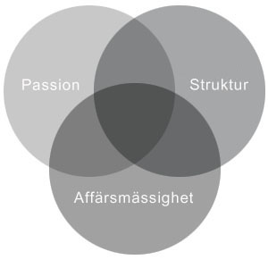

Garbrant Consulting är ett konsultföretag som erbjuder tjänster inom mat, dryck och hotell. Garbrant Consulting ägs och drivs av Ulrika Garbrant, civilekonom och projektledare med mångårig branscherfarenhet på strategisk och operativ nivå.

Hej, Ulrika här
Om
|
Garbrant Consulting skriver regelbundet artiklar i den internationella branschtidningen Foodservice Europe & Middle East. Garbrant Consulting rapporterar om den Nordiska restaurangmarknaden (Sverige, Norge, Danmark, Finland) med aktuell branschfakta, trender och intervjureportage. Garbrant Consulting vänder sig till företag och organisationer inom hotell-, restaurang- och måltids-branschen. Målgruppen består också av företag som på olika sätt har anknytning till mat och dryck, t ex fastighetsbolag, reseföretag, upplevelseföretag, friskvårdsföretag. |
Exempel på kundföretag: Scandic Hotels, Mat på Jobbet, Ballbreaker, Fritidsresor, Espresso House, Max Hamburger-restauranger, Medley, 8t8, Convini, Stöten i Sälen m fl. Vi tror på kombinationen passion, struktur och affärsmässighet för bästa resultat. Garbrant Consulting kan stärka uppdragsgivaren på en eller flera av dessa punkter. |
Tjänster
|
Konceptutveckling Analyser Strategiarbete |
Strukturkapital Artiklar |
Metod
|
Arbetssätt Vi tror på kombinationen passion, struktur och affärsmässighet för bästa resultat. Garbrant Consulting kan stärka uppdragsgivaren på en eller flera av dessa punkter. Begreppet passion innefattar både kreativitet, kunskap, vilja och drivkraft. Den brukar vara en stark faktor hos entreprenören, som kanske i första hand behöver hjälp med struktur. I en större organisation finns ofta en högre grad av struktur och affärsmässighet men kanske ett behov av en utomståendes drivkraft, kunskap och kreativitet. Ibland är uppdragsgivaren stark på alla tre punkter men saknar helt enkelt tid och interna resurser för ett önskat projekt. Vad behöver ni hjälp med? |
 |
Kontakt
Välkommen att höra av dig.
Har du frågor om Garbrant Consulting och våra tjänster?
Ulrika Garbrant
Tel: 012-345 67 89
E-post: ulrika@garbrantconsulting.se